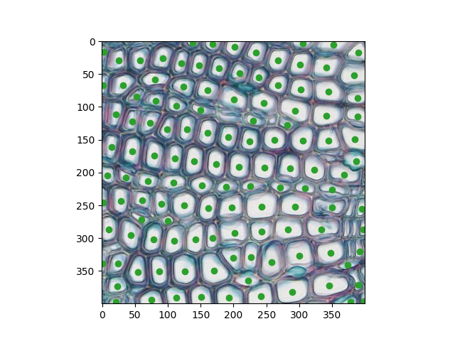

Assignment 1: Union Find And Plant Cell Segmentation (40 Points)
Chris Tralie
Due Tuesday 2/9/2021
- Overview/Logistics
- Background
-
Programming Tasks
- Get Cell Labels (15 Points)
- Get Cell Centers (10 Points)
- Fast Union Find (8 Points)
- Timing Scaling with Input Size (7 Points)
- For the bored...
Overview / Logistics
The purpose of this assignment is to give you practice implementing data structures and manipulating variables in python in the service of a cool application. You will also begin to develop an experimental sense of the relative efficiency of data structures in practice.
Click here to download the starter code for this assignment. When you are finished, please upload unionfind.py and cells.py to canvas, as well as your timing plot.
Learning Objectives
- Convert a problem into a format required by an abstract data type
- Implement union find with size-based merging and path compression in python
- Work with lists and 2D arrays in python
- Experimentally measure the time it takes for code to execute as input size scales
What To Submit
When you are finished, please submit your python files cells.py and unionfind.py to canvas, as well as your timing plot. Please also submit answers to the following questions on Canvas
- The name of your buddy, if you chose to work with one.
- Approximately how many hours it took you to finish this assignment (I will not judge you for this at all...I am simply using it to gauge if the assignments are too easy or hard)
- Your overall impression of the assignment. Did you love it, hate it, or were you neutral? One word answers are fine, but if you have any suggestions for the future let me know.
- Any other concerns that you have. For instance, if you have a bug that you were unable to solve but you made progress, write that here. The more you articulate the problem the more partial credit you will receive (fine to leave this blank)
Background
Watershed Algorithms
Image processing is an applied area of algorithms at the intersection of math and computer science that is broadly applicable across engineering, medicine, science, and art. One example scientific application is the automatic labeling and understanding of cell tissue, such as the image below, taken from the creative commons source at this link

Let's say we wanted to figure out the locations of the cells as a preprocessing step to other analysis, such as figuring out the density of cells in a region or analyzing their shape. Finding such locations is known as image segmentation. To accomplish this, we could label the regions or draw their boundaries by hand, but this would be extremely tedious, especially if we have to process thousands of images of cells for an analysis. So it is of interest to automate segmentation with computer algorithms. To do this, we turn to a class of segmentation algorithms known as watershed methods, and we will explore a simple version in this assignment.
Watershed methods earn their name because we can think of them like a physical process where rain falls on a image, and water pools in features of interest, which are cells in this case. For a more direct analogy with how we've discussed union find so far, one can also think of these techniques as forming bubbles that merge together to fill up these regions.
Watershed methods operate on grayscale versions of images; that is, each pixel is a real number where dark pixels are smaller numbers and light pixels are larger numbers. To keep things simple, we make 0 the darkest possible grayscale value and 1 the brightest possible grayscale value, as shown in the image below, which is the grayscale version of the cells we started with:

When we look at this image, we notice that pixels on the inside of cells are brighter than the boundaries between cells. We can exploit this observation to design a watershed algorithm based on union find. Each pixel starts off as its own "bubble." If a pixel i is greater than some threshold and one of its neighboring pixels j is also greater than this threshold, then the bubbles containing i and j should merge. The bubbles will get larger and larger when we do this for all such neighboring pixels, but the bubbles will not connect across cell boundaries, so eventually, they conform to the shape of the cells.
2D Arrays in Python / Numpy
A 2D array is a natural data structure for a grayscale image, since the images have both rows an columns. 2D arrays in python work just as they do in Java or C++, but they're even easier to initialize, particularly in numpy. For example, to create a 2D numpy array with 100 rows and 50 columns, one would type
and to access an element at row 31, column 10, one would typeProgramming Tasks
You will use the disjoint set ADT to implement the watershed algorithm for the cells image above, and you will then use the components to mark the centers of each cell. We will tackle this piece by piece in the sub-tasks below
Get Cell Labels (15 Points)
In this section, you will implement the basic version of the watershed algorithm using the disjoint set ADT by filling in the get_cell_labels method in cells.py. The method should return an image containing the labels of each cell; that is, an image where each pixel that's in the same cell has the same number. The actual numbers don't matter, as long as they are unique for a cell and the same within that cell. The image below shows an example of running the following code in the __main__ in cells.py:
In addition to the union and find methods, there is a new method in the ADT API now which is get_set_label. This method returns an integer which is the same for all of the elements that are in the same set after some number of union operations in the disjoint set, and which is unique within a set. The number is between 0 and total number of elements in the disjoint set, but it is otherwise arbitrary. So you can use this method to help assign labels to a label image. You'll know your code is working when you get an image similar to the one in the code above saved to your hard drive in the same folder as the code.
Hint
One of the challenges here is to transform the problem in a way that it can be used as input to our disjoint set ADT. As we have defined it, the disjoint set ADT takes whole numbers in a range from 0 up to some number, but we actually have pixels here. So for an image with M rows and N columns, you'll have to come up with a way of converting a pixel location (y, x) uniquely into a whole number between 0 and M*N-1, and then back again.
For example, let's say that we had an image that had M = 6 rows and N = 5 columns. Let's refer to the row index as y and the column index as x. Then we might choose to number each pixel as follows:
| x = 0 | x = 1 | x = 2 | x = 3 | x = 4 | |
| y = 0 | 0 | 1 | 2 | 3 | 4 |
| y = 1 | 5 | 6 | 7 | 8 | 9 |
| y = 2 | 10 | 11 | 12 | 13 | 14 |
| y = 3 | 15 | 16 | 17 | 18 | 19 |
| y = 4 | 20 | 21 | 22 | 23 | 24 |
| y = 5 | 25 | 26 | 27 | 28 | 29 |
Then, let's say that we discover that pixel at location (y=1, x=2) and its neighboring pixel at (y=2, x=2) both have a brightness value over the threshold; that is Then we would say
Then, after we do this for all pairs of neighboring pixels that are above a threshold, we can use the get_set_label method to figure out their labels.
Get Cell Centers (10 Points)
The above is definitely awesome progress, but it would be nice if we could clean up the output somehow and display it on top of the original cells image. One way to do this is to simply come up with a location that's at the center of each cell and to plot that. The row i and the column j are defined as the average row and average column of every pixel contained in the cluster.
To implement this, fill in the method get_cluster_centers, which takes in an image of labels generated from your code in the last section, and which returns an array of [i, j] locations of the centers of each cell. You should only return centers which have at least one pixel in them. If this works properly and you execute the code below in your main:
Then you should get a picture that looks like this:
Hint
One possible way to do this is to have an algorithm like this
The problem with this is, there are M x N pixels and M x N labels. This means that these loops together will go through M2N2 iterations. In our example where M = N = 400, this is 25.6 billion iterations! This is way to slow to be practical, as it is a "quartic" algorithm (O(N4) when M and N are about the same).
Instead, we should try to come up with an algorithm that only has to loop through some constant factor of M*N. The problem with the labels data is it really isn't in the right format to do this, so we need to copy it over to another format that holds the same information, but where it is more convenient to efficiently compute averages for each label.
Let's look at an example of what this might look like. Let's say that we generated the following labels image:
Then we might create a list indexed by the label. In this example, there are 7 rows and 12 columns, so the label indices would go from 0, 1, 2, ..., 7*12-1 = 83. We could create a list with 84 elements, each indexed by the label number. Each element would itself be a list of all of the coordinates of the pixels belonging to that label. For the above example, that would look like this:
| Label | Pixels List |
| 0 | [[0, 0]] |
| 1 | [[0, 1]] |
| ... | |
| 14 | [[1, 2], [1, 3], [2, 2], [2, 3], [3, 2], [3, 3], [4, 2]] |
| 15 | [] |
| 16 | [[1, 4]] |
| 17 | [[1, 5]] |
| ... | |
| 43 | [[1, 9], [1, 10], [2, 8], [2, 9], [2, 10], [3, 7], [3, 8], [3, 9], [3, 10], [4, 7], [4, 8], [4, 9], [5, 8]] |
| 44 | [] |
| 45 | [] |
| 46 | [] |
| 47 | [[3, 11]] |
| ... | |
| 82 | [[6, 10]] |
| 83 | [[6, 11]] |
Note that most of the list labels have 0 or 1 pixel location belonging to them, but label 14 and label 43 each have more than 1 pixel, so we treat those as cells and average the coordinates that are there.
Actually, a better data structure than a list for this task is a python dictionary (Sheehy 2.4.4), but I haven't technically gone over them in class yet, so I wanted to also hint at a list-based solution.
Fast Union Find (8 Points)
Now that you have a working implementation of cell segmentation, it's time to implement a faster version of union find. Modify the UFFast class in unionfind.py so that it implements both path compression and size-based merging, as we discussed in class. To make sure it's working properly, you should test it two ways:
- There is a number of unit tests in
test.py, including the example we went over in class, that run on each of the four implementations of the disjoint set, includingUFFast. There is also a "stress test" that randomly performs a sequence of unions and finds on a larger set of bubbles, and which checks to make sure all implementations give the same answer. Study the code in stress test to make sure it makes sense. Then, execute the unit tests by typing
In the spyder console!python -m pytest test.py -
Because the code you wrote in
get_cell_labelswas designed to work at the ADT/API level, it's easy to swap in new implementations. And python is such a flexible language that you can actually pass along classes as parameters to methods! Run your cell segmentation code again with
And make sure that it gives the same answer.get_cell_labels(I, thresh, UFFast)
Timing Scaling with Input Size (7 Points)
Now we will get a sense for the efficiency of the tree-based union find compared to one of our original ideas empirically by testing it out and timing it on inputs of varying size. Since, as we discussed in class, certain operations may take a long time but may save us time in future operations, we are interested in the amortized cost, or the average cost of unions and finds over many operations. Furthermore, whenever we're thinking about the performance of algorithms, we want to know how the algorithms scale in performance as the input size scales up. What you should do to test this is to fill in the method time_test in cells.py to test the get_cell_labels method on inputs of increasing size for both UFFast and the more naive IDsSet. To time the run of an algorithm, you can type
This is not reliable for a single test, however, because other things may be going on in the background of your computer randomly that make it take longer on some runs. So you should run each test at least ten times for a fixed number of pixels and compute the average time, divided by the number of pixels. Then, the code will plot the results. Please include this plot in your submission.
For the bored...
If you've finished the above and you're itching for more, here are a few ideas you can explore (none of them are required!):
- We ended up drawing the center of each cell, but as we mused about in the background, sometimes we want to know more about the shape of the cell. Modify the code so that it draws the boundaries of cells instead of just their center. The boundary should be expressed as a sequence of pixels in counter-clockwise order
- We had manually set a threshold of 0.8 in this assignment, but is there a way you can think of to autotune the threshold to get good cell segmentations?
- Are there images other than the cells image we looked at here that would work well with this algorithm? Try them out and share your results!